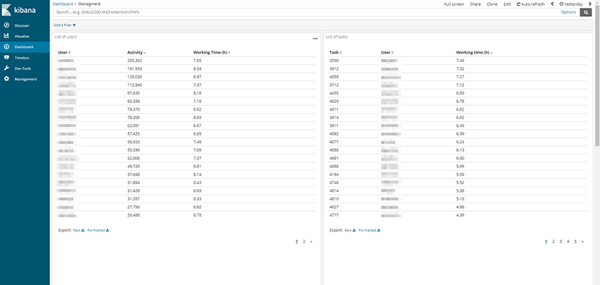

This the multi-page printable view of this section. Click here to print.
Administration
- 1: Basics
- 1.1: Installation Guide
- 1.2: AWS-Deployment Guide
- 1.3: REST API guide
- 2: Advanced
1 - Basics
1.1 - Installation Guide
Quick installation guide
Before you can use CVAT, you’ll need to get it installed. The document below contains instructions for the most popular operating systems. If your system is not covered by the document it should be relatively straight forward to adapt the instructions below for other systems.
Probably you need to modify the instructions below in case you are behind a proxy server. Proxy is an advanced topic and it is not covered by the guide.
Ubuntu 18.04 (x86_64/amd64)
-
Open a terminal window. If you don’t know how to open a terminal window on Ubuntu please read the answer.
-
Type commands below into the terminal window to install
docker. More instructions can be found here.sudo apt-get update sudo apt-get --no-install-recommends install -y \ apt-transport-https \ ca-certificates \ curl \ gnupg-agent \ software-properties-common curl -fsSL https://download.docker.com/linux/ubuntu/gpg | sudo apt-key add - sudo add-apt-repository \ "deb [arch=amd64] https://download.docker.com/linux/ubuntu \ $(lsb_release -cs) \ stable" sudo apt-get update sudo apt-get --no-install-recommends install -y docker-ce docker-ce-cli containerd.io -
Perform post-installation steps to run docker without root permissions.
sudo groupadd docker sudo usermod -aG docker $USERLog out and log back in (or reboot) so that your group membership is re-evaluated. You can type
groupscommand in a terminal window after that and check ifdockergroup is in its output. -
Install docker-compose (1.19.0 or newer). Compose is a tool for defining and running multi-container docker applications.
sudo apt-get --no-install-recommends install -y python3-pip python3-setuptools sudo python3 -m pip install setuptools docker-compose -
Clone CVAT source code from the GitHub repository.
sudo apt-get --no-install-recommends install -y git git clone https://github.com/opencv/cvat cd cvat -
Run docker containers. It will take some time to download the latest CVAT release and other required images like postgres, redis, etc. from DockerHub and create containers.
docker-compose up -d -
Alternative: if you want to build the images locally with unreleased changes run the following command. It will take some time to build CVAT images.
docker-compose -f docker-compose.yml -f docker-compose.dev.yml build docker-compose up -d -
You can register a user but by default it will not have rights even to view list of tasks. Thus you should create a superuser. A superuser can use an admin panel to assign correct groups to the user. Please use the command below:
docker exec -it cvat bash -ic 'python3 ~/manage.py createsuperuser'Choose a username and a password for your admin account. For more information please read Django documentation.
-
Google Chrome is the only browser which is supported by CVAT. You need to install it as well. Type commands below in a terminal window:
curl https://dl-ssl.google.com/linux/linux_signing_key.pub | sudo apt-key add - sudo sh -c 'echo "deb [arch=amd64] http://dl.google.com/linux/chrome/deb/ stable main" >> /etc/apt/sources.list.d/google-chrome.list' sudo apt-get update sudo apt-get --no-install-recommends install -y google-chrome-stable -
Open the installed Google Chrome browser and go to localhost:8080. Type your login/password for the superuser on the login page and press the Login button. Now you should be able to create a new annotation task. Please read the CVAT manual for more details.
Windows 10
-
Install WSL2 (Windows subsystem for Linux) refer to this official guide. WSL2 requires Windows 10, version 2004 or higher. Note: You may not have to install a Linux distribution unless needed.
-
Download and install Docker Desktop for Windows. Double-click
Docker for Windows Installerto run the installer. More instructions can be found here. Official guide for docker WSL2 backend can be found here. Note: Check that you are specifically using WSL2 backend for Docker. -
Download and install Git for Windows. When installing the package please keep all options by default. More information about the package can be found here.
-
Download and install Google Chrome. It is the only browser which is supported by CVAT.
-
Go to windows menu, find
Git Bashapplication and run it. You should see a terminal window. -
Clone CVAT source code from the GitHub repository.
git clone https://github.com/opencv/cvat cd cvat -
Run docker containers. It will take some time to download the latest CVAT release and other required images like postgres, redis, etc. from DockerHub and create containers.
docker-compose up -d -
Alternative: if you want to build the images locally with unreleased changes run the following command. It will take some time to build CVAT images.
docker-compose -f docker-compose.yml -f docker-compose.dev.yml build docker-compose up -d -
You can register a user but by default it will not have rights even to view list of tasks. Thus you should create a superuser. A superuser can use an admin panel to assign correct groups to other users. Please use the command below:
winpty docker exec -it cvat bash -ic 'python3 ~/manage.py createsuperuser'If you don’t have winpty installed or the above command does not work, you may also try the following:
# enter docker image first docker exec -it cvat /bin/bash # then run python3 ~/manage.py createsuperuserChoose a username and a password for your admin account. For more information please read Django documentation.
-
Open the installed Google Chrome browser and go to localhost:8080. Type your login/password for the superuser on the login page and press the Login button. Now you should be able to create a new annotation task. Please read the CVAT manual for more details.
Mac OS Mojave
-
Download Docker for Mac. Double-click Docker.dmg to open the installer, then drag Moby the whale to the Applications folder. Double-click Docker.app in the Applications folder to start Docker. More instructions can be found here.
-
There are several ways to install Git on a Mac. The easiest is probably to install the Xcode Command Line Tools. On Mavericks (10.9) or above you can do this simply by trying to run git from the Terminal the very first time.
git --versionIf you don’t have it installed already, it will prompt you to install it. More instructions can be found here.
-
Download and install Google Chrome. It is the only browser which is supported by CVAT.
-
Open a terminal window. The terminal app is in the Utilities folder in Applications. To open it, either open your Applications folder, then open Utilities and double-click on Terminal, or press Command - spacebar to launch Spotlight and type “Terminal,” then double-click the search result.
-
Clone CVAT source code from the GitHub repository.
git clone https://github.com/opencv/cvat cd cvat -
Run docker containers. It will take some time to download the latest CVAT release and other required images like postgres, redis, etc. from DockerHub and create containers.
docker-compose up -d -
Alternative: if you want to build the images locally with unreleased changes run the following command. It will take some time to build CVAT images.
docker-compose -f docker-compose.yml -f docker-compose.dev.yml build docker-compose up -d -
You can register a user but by default it will not have rights even to view list of tasks. Thus you should create a superuser. A superuser can use an admin panel to assign correct groups to other users. Please use the command below:
docker exec -it cvat bash -ic 'python3 ~/manage.py createsuperuser'Choose a username and a password for your admin account. For more information please read Django documentation.
-
Open the installed Google Chrome browser and go to localhost:8080. Type your login/password for the superuser on the login page and press the Login button. Now you should be able to create a new annotation task. Please read the CVAT manual for more details.
Advanced Topics
Deploying CVAT behind a proxy
If you deploy CVAT behind a proxy and do not plan to use any of serverless functions
for automatic annotation, the exported environment variables
http_proxy, https_proxy and no_proxy should be enough to build images.
Otherwise please create or edit the file ~/.docker/config.json in the home directory of the user
which starts containers and add JSON such as the following:
{
"proxies": {
"default": {
"httpProxy": "http://proxy_server:port",
"httpsProxy": "http://proxy_server:port",
"noProxy": "*.test.example.com,.example2.com"
}
}
}
These environment variables are set automatically within any container. Please see the Docker documentation for more details.
Using the Traefik dashboard
If you are customizing the docker compose files and you come upon some unexpected issues, using the Traefik dashboard might be very useful to see if the problem is with Traefik configuration, or with some of the services.
You can enable the Traefik dashboard by uncommenting the following lines from docker-compose.yml
services:
traefik:
# Uncomment to get Traefik dashboard
# - "--entryPoints.dashboard.address=:8090"
# - "--api.dashboard=true"
# labels:
# - traefik.enable=true
# - traefik.http.routers.dashboard.entrypoints=dashboard
# - traefik.http.routers.dashboard.service=api@internal
# - traefik.http.routers.dashboard.rule=Host(`${CVAT_HOST:-localhost}`)
and if you are using docker-compose.https.yml, also uncomment these lines
services:
traefik:
command:
# Uncomment to get Traefik dashboard
# - "--entryPoints.dashboard.address=:8090"
# - "--api.dashboard=true"
Note that this “insecure” dashboard is not recommended in production (and if your instance is publicly available); if you want to keep the dashboard in production you should read Traefik’s documentation on how to properly secure it.
Additional components
# Build and run containers with Analytics component support:
docker-compose -f docker-compose.yml \
-f components/analytics/docker-compose.analytics.yml up -d --build
Semi-automatic and automatic annotation
Please follow this guide.
Stop all containers
The command below stops and removes containers, networks, volumes, and images
created by up.
docker-compose down
Use your own domain
If you want to access your instance of CVAT outside of your localhost (on another domain),
you should specify the CVAT_HOST environment variable, like this:
export CVAT_HOST=<YOUR_DOMAIN>
Share path
You can use a share storage for data uploading during you are creating a task. To do that you can mount it to CVAT docker container. Example of docker-compose.override.yml for this purpose:
version: '3.3'
services:
cvat:
environment:
CVAT_SHARE_URL: 'Mounted from /mnt/share host directory'
volumes:
- cvat_share:/home/django/share:ro
volumes:
cvat_share:
driver_opts:
type: none
device: /mnt/share
o: bind
You can change the share device path to your actual share. For user convenience we have defined the environment variable $CVAT_SHARE_URL. This variable contains a text (url for example) which is shown in the client-share browser.
You can mount your cloud storage as a FUSE and use it later as a share.
Email verification
You can enable email verification for newly registered users. Specify these options in the settings file to configure Django allauth to enable email verification (ACCOUNT_EMAIL_VERIFICATION = ‘mandatory’). Access is denied until the user’s email address is verified.
ACCOUNT_AUTHENTICATION_METHOD = 'username'
ACCOUNT_CONFIRM_EMAIL_ON_GET = True
ACCOUNT_EMAIL_REQUIRED = True
ACCOUNT_EMAIL_VERIFICATION = 'mandatory'
# Email backend settings for Django
EMAIL_BACKEND = 'django.core.mail.backends.smtp.EmailBackend'
Also you need to configure the Django email backend to send emails. This depends on the email server you are using and is not covered in this tutorial, please see Django SMTP backend configuration for details.
Deploy CVAT on the Scaleway public cloud
Please follow this tutorial to install and set up remote access to CVAT on a Scaleway cloud instance with data in a mounted object storage bucket.
Deploy secure CVAT instance with HTTPS
Using Traefik, you can automatically obtain TLS certificate for your domain from Let’s Encrypt, enabling you to use HTTPS protocol to access your website.
To enable this, first set the the CVAT_HOST (the domain of your website) and ACME_EMAIL
(contact email for Let’s Encrypt) environment variables:
export CVAT_HOST=<YOUR_DOMAIN>
export ACME_EMAIL=<YOUR_EMAIL>
Then, use the docker-compose.https.yml file to override the base docker-compose.yml file:
docker-compose -f docker-compose.yml -f docker-compose.https.yml up -d
Then, the CVAT instance will be available at your domain on ports 443 (HTTPS) and 80 (HTTP, redirects to 443).
1.2 - AWS-Deployment Guide
There are two ways of deploying the CVAT.
-
On Nvidia GPU Machine: Tensorflow annotation feature is dependent on GPU hardware. One of the easy ways to launch CVAT with the tf-annotation app is to use AWS P3 instances, which provides the NVIDIA GPU. Read more about P3 instances here. Overall setup instruction is explained in main readme file, except Installing Nvidia drivers. So we need to download the drivers and install it. For Amazon P3 instances, download the Nvidia Drivers from Nvidia website. For more check Installing the NVIDIA Driver on Linux Instances link.
-
On Any other AWS Machine: We can follow the same instruction guide mentioned in the installation instructions. The additional step is to add a security group and rule to allow incoming connections.
For any of above, don’t forget to set the CVAT_HOST environemnt variable to the exposed
AWS public IP address or hostname:
export CVAT_HOST=your-instance.amazonaws.com
In case of problems with using hostname, you can also use the public IPV4 instead of hostname.
For AWS or any cloud based machines where the instances need to be terminated or stopped,
the public IPV4 and hostname changes with every stop and reboot.
To address this efficiently, avoid using spot instances that cannot be stopped,
since copying the EBS to an AMI and restarting it throws problems.
On the other hand, when a regular instance is stopped and restarted,
the new hostname/IPV4 can be used to set the CVAT_HOST environment variable.
1.3 - REST API guide
To access swagger documentation you need to be authorized.
Automatically generated Swagger documentation for Django REST API is available
on <cvat_origin>/api/swagger(default: localhost:8080/api/swagger).
Swagger documentation is visible on allowed hosts, Update environment
variable in docker-compose.yml file with cvat hosted machine IP or domain
name. Example - ALLOWED_HOSTS: 'localhost, 127.0.0.1'.
Make a request to a resource stored on a server and the server will respond with the requested information. The HTTP protocol is used to transport a data. Requests are divided into groups:
auth- user authorization queriescomments- requests to post/delete comments to issuesissues- update, delete and view problem commentsjobs-requests to manage the joblambda- requests to work with lambda functionprojects- project management queriesrestrictions- requests for restrictionsreviews-adding and removing the review of the jobserver- server information requeststasks- requests to manage tasksusers- user management queries
Besides it contains Models.
Models - the data type is described using a
schema object.
Each group contains queries related to a different types of HTTP methods such as: GET, POST, PATCH, DELETE, etc.
Different methods are highlighted in different color. Each item has a name and description.
Clicking on an element opens a form with a name, description and settings input field or an example of json values.
To find out more, read swagger specification.
To try to send a request, click Try it now and type Execute.
You’ll get a response in the form of Curl, Request URL and Server response.
2 - Advanced
2.1 - Analytics for Computer Vision Annotation Tool (CVAT)

It is possible to proxy annotation logs from client to ELK. To do that run the following command below:
Build docker image
# From project root directory
docker-compose -f docker-compose.yml -f components/analytics/docker-compose.analytics.yml build
Run docker container
# From project root directory
docker-compose -f docker-compose.yml -f components/analytics/docker-compose.analytics.yml up -d
At the moment it is not possible to save advanced settings. Below values should be specified manually.
Time picker default
{ “from”: “now/d”, “to”: “now/d”, “display”: “Today”, “section”: 0 }
Time picker quick ranges
[
{
"from": "now/d",
"to": "now/d",
"display": "Today",
"section": 0
},
{
"from": "now/w",
"to": "now/w",
"display": "This week",
"section": 0
},
{
"from": "now/M",
"to": "now/M",
"display": "This month",
"section": 0
},
{
"from": "now/y",
"to": "now/y",
"display": "This year",
"section": 0
},
{
"from": "now/d",
"to": "now",
"display": "Today so far",
"section": 2
},
{
"from": "now/w",
"to": "now",
"display": "Week to date",
"section": 2
},
{
"from": "now/M",
"to": "now",
"display": "Month to date",
"section": 2
},
{
"from": "now/y",
"to": "now",
"display": "Year to date",
"section": 2
},
{
"from": "now-1d/d",
"to": "now-1d/d",
"display": "Yesterday",
"section": 1
},
{
"from": "now-1w/w",
"to": "now-1w/w",
"display": "Previous week",
"section": 1
},
{
"from": "now-1m/m",
"to": "now-1m/m",
"display": "Previous month",
"section": 1
},
{
"from": "now-1y/y",
"to": "now-1y/y",
"display": "Previous year",
"section": 1
}
]
2.2 - Semi-automatic and Automatic Annotation
⚠ WARNING: Do not use
docker-compose upIf you did, make sure all containers are stopped bydocker-compose down.
-
To bring up cvat with auto annotation tool, from cvat root directory, you need to run:
docker-compose -f docker-compose.yml -f components/serverless/docker-compose.serverless.yml up -dIf you did any changes to the docker-compose files, make sure to add
--buildat the end.To stop the containers, simply run:
docker-compose -f docker-compose.yml -f components/serverless/docker-compose.serverless.yml down -
You have to install
nuctlcommand line tool to build and deploy serverless functions. Download version 1.5.16. It is important that the version you download matches the version in docker-compose.serverless.yml After downloading the nuclio, give it a proper permission and do a softlinksudo chmod +x nuctl-<version>-linux-amd64 sudo ln -sf $(pwd)/nuctl-<version>-linux-amd64 /usr/local/bin/nuctl -
Create
cvatproject inside nuclio dashboard where you will deploy new serverless functions and deploy a couple of DL models. Commands below should be run only after CVAT has been installed usingdocker-composebecause it runs nuclio dashboard which manages all serverless functions.nuctl create project cvatnuctl deploy --project-name cvat \ --path serverless/openvino/dextr/nuclio \ --volume `pwd`/serverless/common:/opt/nuclio/common \ --platform localnuctl deploy --project-name cvat \ --path serverless/openvino/omz/public/yolo-v3-tf/nuclio \ --volume `pwd`/serverless/common:/opt/nuclio/common \ --platform localNote:
- See deploy_cpu.sh for more examples.
GPU Support
You will need to install Nvidia Container Toolkit. Also you will need to add
--resource-limit nvidia.com/gpu=1 --triggers '{"myHttpTrigger": {"maxWorkers": 1}}'to the nuclio deployment command. You can increase the maxWorker if you have enough GPU memory. As an example, below will run on the GPU:nuctl deploy --project-name cvat \ --path serverless/tensorflow/matterport/mask_rcnn/nuclio \ --platform local --base-image tensorflow/tensorflow:1.15.5-gpu-py3 \ --desc "GPU based implementation of Mask RCNN on Python 3, Keras, and TensorFlow." \ --image cvat/tf.matterport.mask_rcnn_gpu \ --triggers '{"myHttpTrigger": {"maxWorkers": 1}}' \ --resource-limit nvidia.com/gpu=1Note:
- The number of GPU deployed functions will be limited to your GPU memory.
- See deploy_gpu.sh script for more examples.
Troubleshooting Nuclio Functions:
-
You can open nuclio dashboard at localhost:8070. Make sure status of your functions are up and running without any error.
-
Test your deployed DL model as a serverless function. The command below should work on Linux and Mac OS.
image=$(curl https://upload.wikimedia.org/wikipedia/en/7/7d/Lenna_%28test_image%29.png --output - | base64 | tr -d '\n') cat << EOF > /tmp/input.json {"image": "$image"} EOF cat /tmp/input.json | nuctl invoke openvino.omz.public.yolo-v3-tf -c 'application/json'20.07.17 12:07:44.519 nuctl.platform.invoker (I) Executing function {"method": "POST", "url": "http://:57308", "headers": {"Content-Type":["application/json"],"X-Nuclio-Log-Level":["info"],"X-Nuclio-Target":["openvino.omz.public.yolo-v3-tf"]}} 20.07.17 12:07:45.275 nuctl.platform.invoker (I) Got response {"status": "200 OK"} 20.07.17 12:07:45.275 nuctl (I) >>> Start of function logs 20.07.17 12:07:45.275 ino.omz.public.yolo-v3-tf (I) Run yolo-v3-tf model {"worker_id": "0", "time": 1594976864570.9353} 20.07.17 12:07:45.275 nuctl (I) <<< End of function logs > Response headers: Date = Fri, 17 Jul 2020 09:07:45 GMT Content-Type = application/json Content-Length = 100 Server = nuclio > Response body: [ { "confidence": "0.9992254", "label": "person", "points": [ 39, 124, 408, 512 ], "type": "rectangle" } ] -
To check for internal server errors, run
docker ps -ato see the list of containers. Find the container that you are interested, e.g.,nuclio-nuclio-tf-faster-rcnn-inception-v2-coco-gpu. Then check its logs bydocker logs <name of your container>e.g.,docker logs nuclio-nuclio-tf-faster-rcnn-inception-v2-coco-gpu -
To debug a code inside a container, you can use vscode to attach to a container instructions. To apply your changes, make sure to restart the container.
docker restart <name_of_the_container>
2.3 - Mounting cloud storage
AWS S3 bucket as filesystem
Ubuntu 20.04
Mount
-
Install s3fs:
sudo apt install s3fs -
Enter your credentials in a file
${HOME}/.passwd-s3fsand set owner-only permissions:echo ACCESS_KEY_ID:SECRET_ACCESS_KEY > ${HOME}/.passwd-s3fs chmod 600 ${HOME}/.passwd-s3fs -
Uncomment
user_allow_otherin the/etc/fuse.conffile:sudo nano /etc/fuse.conf -
Run s3fs, replace
bucket_name,mount_point:s3fs <bucket_name> <mount_point> -o allow_other
For more details see here.
Automatically mount
Follow the first 3 mounting steps above.
Using fstab
-
Create a bash script named aws_s3_fuse(e.g in /usr/bin, as root) with this content (replace
user_nameon whose behalf the disk will be mounted,backet_name,mount_point,/path/to/.passwd-s3fs):#!/bin/bash sudo -u <user_name> s3fs <backet_name> <mount_point> -o passwd_file=/path/to/.passwd-s3fs -o allow_other exit 0 -
Give it the execution permission:
sudo chmod +x /usr/bin/aws_s3_fuse -
Edit
/etc/fstabadding a line like this, replacemount_point):/absolute/path/to/aws_s3_fuse <mount_point> fuse allow_other,user,_netdev 0 0
Using systemd
-
Create unit file
sudo nano /etc/systemd/system/s3fs.service(replaceuser_name,bucket_name,mount_point,/path/to/.passwd-s3fs):[Unit] Description=FUSE filesystem over AWS S3 bucket After=network.target [Service] Environment="MOUNT_POINT=<mount_point>" User=<user_name> Group=<user_name> ExecStart=s3fs <bucket_name> ${MOUNT_POINT} -o passwd_file=/path/to/.passwd-s3fs -o allow_other ExecStop=fusermount -u ${MOUNT_POINT} Restart=always Type=forking [Install] WantedBy=multi-user.target -
Update the system configurations, enable unit autorun when the system boots, mount the bucket:
sudo systemctl daemon-reload sudo systemctl enable s3fs.service sudo systemctl start s3fs.service
Check
A file /etc/mtab contains records of currently mounted filesystems.
cat /etc/mtab | grep 's3fs'
Unmount filesystem
fusermount -u <mount_point>
If you used systemd to mount a bucket:
sudo systemctl stop s3fs.service
sudo systemctl disable s3fs.service
Microsoft Azure container as filesystem
Ubuntu 20.04
Mount
-
Set up the Microsoft package repository.(More here)
wget https://packages.microsoft.com/config/ubuntu/20.04/packages-microsoft-prod.deb sudo dpkg -i packages-microsoft-prod.deb sudo apt-get update -
Install
blobfuseandfuse:sudo apt-get install blobfuse fuseFor more details see here
-
Create environments (replace
account_name,account_key,mount_point):export AZURE_STORAGE_ACCOUNT=<account_name> export AZURE_STORAGE_ACCESS_KEY=<account_key> MOUNT_POINT=<mount_point> -
Create a folder for cache:
sudo mkdir -p /mnt/blobfusetmp -
Make sure the file must be owned by the user who mounts the container:
sudo chown <user> /mnt/blobfusetmp -
Create the mount point, if it doesn’t exists:
mkdir -p ${MOUNT_POINT} -
Uncomment
user_allow_otherin the/etc/fuse.conffile:sudo nano /etc/fuse.conf -
Mount container(replace
your_container):blobfuse ${MOUNT_POINT} --container-name=<your_container> --tmp-path=/mnt/blobfusetmp -o allow_other
Automatically mount
Follow the first 7 mounting steps above.
Using fstab
-
Create configuration file
connection.cfgwith same content, change accountName, select one from accountKey or sasToken and replace with your value:accountName <account-name-here> # Please provide either an account key or a SAS token, and delete the other line. accountKey <account-key-here-delete-next-line> #change authType to specify only 1 sasToken <shared-access-token-here-delete-previous-line> authType <MSI/SAS/SPN/Key/empty> containerName <insert-container-name-here> -
Create a bash script named
azure_fuse(e.g in /usr/bin, as root) with content below (replaceuser_nameon whose behalf the disk will be mounted,mount_point,/path/to/blobfusetmp,/path/to/connection.cfg):#!/bin/bash sudo -u <user_name> blobfuse <mount_point> --tmp-path=/path/to/blobfusetmp --config-file=/path/to/connection.cfg -o allow_other exit 0 -
Give it the execution permission:
sudo chmod +x /usr/bin/azure_fuse -
Edit
/etc/fstabwith the blobfuse script. Add the following line(replace paths):
/absolute/path/to/azure_fuse </path/to/desired/mountpoint> fuse allow_other,user,_netdev
Using systemd
-
Create unit file
sudo nano /etc/systemd/system/blobfuse.service. (replaceuser_name,mount_point,container_name,/path/to/connection.cfg):[Unit] Description=FUSE filesystem over Azure container After=network.target [Service] Environment="MOUNT_POINT=<mount_point>" User=<user_name> Group=<user_name> ExecStart=blobfuse ${MOUNT_POINT} --container-name=<container_name> --tmp-path=/mnt/blobfusetmp --config-file=/path/to/connection.cfg -o allow_other ExecStop=fusermount -u ${MOUNT_POINT} Restart=always Type=forking [Install] WantedBy=multi-user.target -
Update the system configurations, enable unit autorun when the system boots, mount the container:
sudo systemctl daemon-reload sudo systemctl enable blobfuse.service sudo systemctl start blobfuse.serviceOr for more detail see here
Check
A file /etc/mtab contains records of currently mounted filesystems.
cat /etc/mtab | grep 'blobfuse'
Unmount filesystem
fusermount -u <mount_point>
If you used systemd to mount a container:
sudo systemctl stop blobfuse.service
sudo systemctl disable blobfuse.service
If you have any mounting problems, check out the answers to common problems
Google Drive as filesystem
Ubuntu 20.04
Mount
To mount a google drive as a filesystem in user space(FUSE) you can use google-drive-ocamlfuse To do this follow the instructions below:
-
Install google-drive-ocamlfuse:
sudo add-apt-repository ppa:alessandro-strada/ppa sudo apt-get update sudo apt-get install google-drive-ocamlfuse -
Run
google-drive-ocamlfusewithout parameters:google-drive-ocamlfuseThis command will create the default application directory (~/.gdfuse/default), containing the configuration file config (see the wiki page for more details about configuration). And it will start a web browser to obtain authorization to access your Google Drive. This will let you modify default configuration before mounting the filesystem.
Then you can choose a local directory to mount your Google Drive (e.g.: ~/GoogleDrive).
-
Create the mount point, if it doesn’t exist(replace mount_point):
mountpoint="<mount_point>" mkdir -p $mountpoint -
Uncomment
user_allow_otherin the/etc/fuse.conffile:sudo nano /etc/fuse.conf -
Mount the filesystem:
google-drive-ocamlfuse -o allow_other $mountpoint
Automatically mount
Follow the first 4 mounting steps above.
Using fstab
-
Create a bash script named gdfuse(e.g in /usr/bin, as root) with this content (replace
user_nameon whose behalf the disk will be mounted,label,mount_point):#!/bin/bash sudo -u <user_name> google-drive-ocamlfuse -o allow_other -label <label> <mount_point> exit 0 -
Give it the execution permission:
sudo chmod +x /usr/bin/gdfuse -
Edit
/etc/fstabadding a line like this, replacemount_point):/absolute/path/to/gdfuse <mount_point> fuse allow_other,user,_netdev 0 0For more details see here
Using systemd
-
Create unit file
sudo nano /etc/systemd/system/google-drive-ocamlfuse.service. (replaceuser_name,label(defaultlabel=default),mount_point):[Unit] Description=FUSE filesystem over Google Drive After=network.target [Service] Environment="MOUNT_POINT=<mount_point>" User=<user_name> Group=<user_name> ExecStart=google-drive-ocamlfuse -label <label> ${MOUNT_POINT} ExecStop=fusermount -u ${MOUNT_POINT} Restart=always Type=forking [Install] WantedBy=multi-user.target -
Update the system configurations, enable unit autorun when the system boots, mount the drive:
sudo systemctl daemon-reload sudo systemctl enable google-drive-ocamlfuse.service sudo systemctl start google-drive-ocamlfuse.serviceFor more details see here
Check
A file /etc/mtab contains records of currently mounted filesystems.
cat /etc/mtab | grep 'google-drive-ocamlfuse'
Unmount filesystem
fusermount -u <mount_point>
If you used systemd to mount a drive:
sudo systemctl stop google-drive-ocamlfuse.service
sudo systemctl disable google-drive-ocamlfuse.service
2.4 - Backup guide
About CVAT data volumes
Docker volumes are used to store all CVAT data:
-
cvat_db: PostgreSQL database files, used to store information about users, tasks, projects, annotations, etc. Mounted intocvat_dbcontainer by/var/lib/postgresql/datapath. -
cvat_data: used to store uploaded and prepared media data. Mounted intocvatcontainer by/home/django/datapath. -
cvat_keys: used to store user ssh keys needed for synchronization with a remote Git repository. Mounted intocvatcontainer by/home/django/keyspath. -
cvat_logs: used to store logs of CVAT backend processes managed by supevisord. Mounted intocvatcontainer by/home/django/logspath. -
cvat_events: this is an optional volume that is used only when Analytics component is enabled and is used to store Elasticsearch database files. Mounted intocvat_elasticsearchcontainer by/usr/share/elasticsearch/datapath.
How to backup all CVAT data
All CVAT containers should be stopped before backup:
docker-compose stop
Please don’t forget to include all the compose config files that were used in the docker-compose command
using the -f parameter.
Backup data:
mkdir backup
docker run --rm --name temp_backup --volumes-from cvat_db -v $(pwd)/backup:/backup ubuntu tar -cjvf /backup/cvat_db.tar.bz2 /var/lib/postgresql/data
docker run --rm --name temp_backup --volumes-from cvat -v $(pwd)/backup:/backup ubuntu tar -cjvf /backup/cvat_data.tar.bz2 /home/django/data
# [optional]
docker run --rm --name temp_backup --volumes-from cvat_elasticsearch -v $(pwd)/backup:/backup ubuntu tar -cjvf /backup/cvat_events.tar.bz2 /usr/share/elasticsearch/data
Make sure the backup archives have been created, the output of ls backup command should look like this:
ls backup
cvat_data.tar.bz2 cvat_db.tar.bz2 cvat_events.tar.bz2
How to restore CVAT from backup
Note: CVAT containers must exist (if no, please follow the installation guide). Stop all CVAT containers:
docker-compose stop
Restore data:
cd <path_to_backup_folder>
docker run --rm --name temp_backup --volumes-from cvat_db -v $(pwd):/backup ubuntu bash -c "cd /var/lib/postgresql/data && tar -xvf /backup/cvat_db.tar.bz2 --strip 4"
docker run --rm --name temp_backup --volumes-from cvat -v $(pwd):/backup ubuntu bash -c "cd /home/django/data && tar -xvf /backup/cvat_data.tar.bz2 --strip 3"
# [optional]
docker run --rm --name temp_backup --volumes-from cvat_elasticsearch -v $(pwd):/backup ubuntu bash -c "cd /usr/share/elasticsearch/data && tar -xvf /backup/cvat_events.tar.bz2 --strip 4"
After that run CVAT as usual:
docker-compose up -d